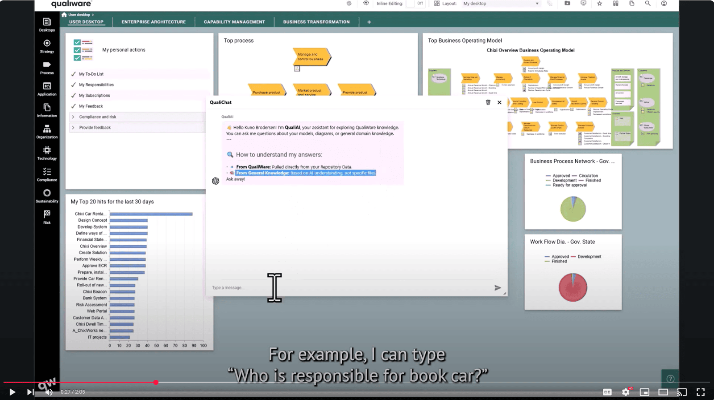

The QualiWare blog
Stories that show the platform at work, and how we keep up with the challenges enterprise architects face.
Featured stories
All stories
All topics · newest first
QualiWare Recognized as a Champion
Read story
Why Gartner's First Magic Quadrant for Digital Twin of an Organization Platforms Matters
Read storyWhat is a Digital Twin of an Organization (DTO)?
Read storyProject Portfolio Management Is About More Than Managing Projects
Read storyOwn Your Digital Resilience
Read storyTrends in Enterprise Architecture 2026
Read story
QualiWare DTO Manufacturing use case
Read story
Great Preparedness Day
Read story
Build a Digital Twin of an Organization (DTO) in 8–12 weeks
Read storyPreparedness and Digital Sovereignty
Read storyHow QualiWare Empowers Financial Services
Read storyFrom Digital Dependency to Digital Sovereignty
Read storyOur customers named QualiWare a Leader in Enterprise Architecture – again
Read story
AI Features in QualiWare 10.10
Read storyGestion du portefeuille informatique avec QualiWare
Read storyNo stories match. Try another topic or search word.
Go deeper
See the platform behind the stories
Watch a recorded webinar, or explore how QualiWare builds a connected model of your organization.